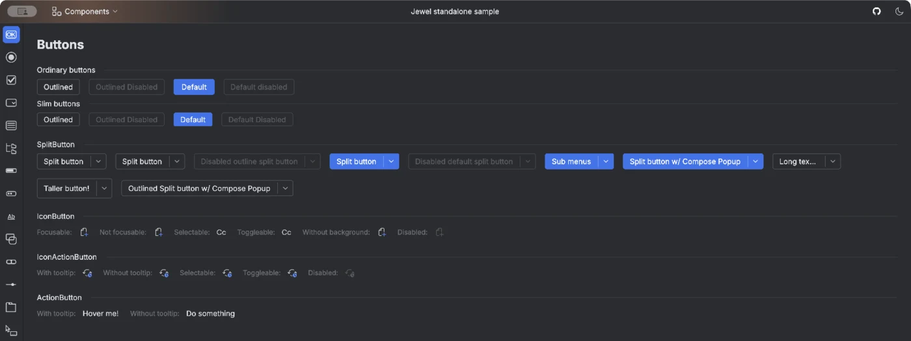
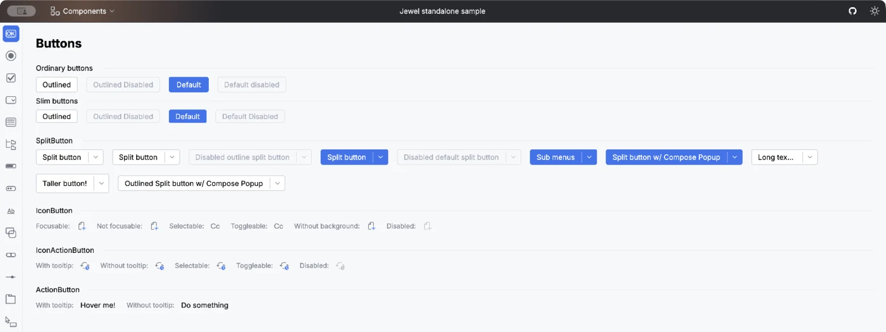
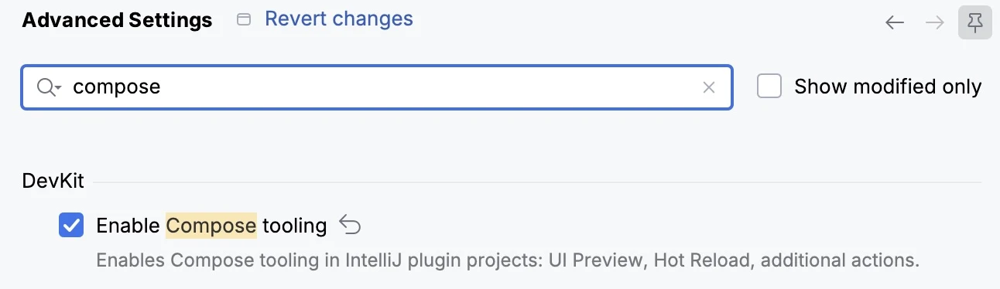
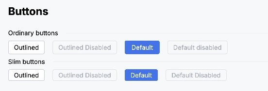
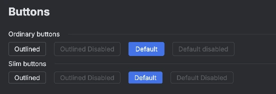
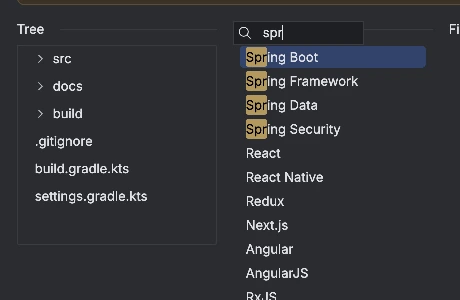
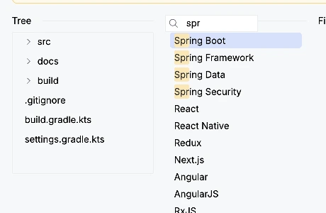
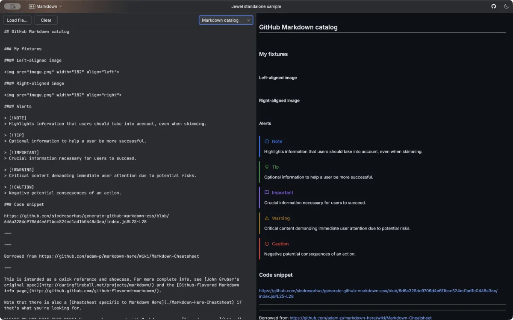
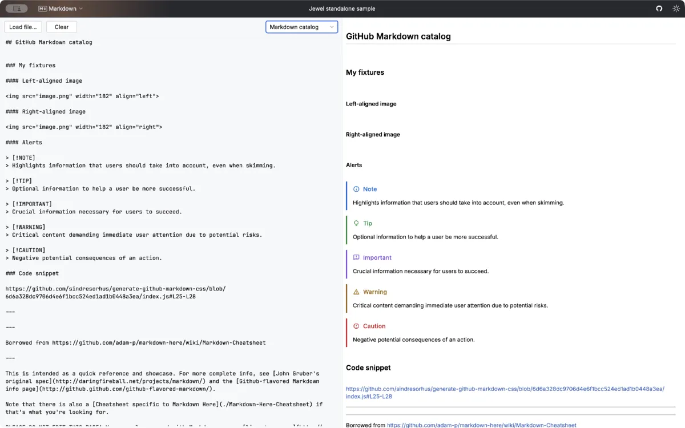

Jewel implements the IntelliJ Platform's New UI in Compose Multiplatform for desktop: 40+ components built to the real Int UI specs, plus a Swing bridge that makes your plugin follow whatever theme the user picked, including third-party ones you have never seen.
The same components, two very different setups. Inside the IDE, Jewel is already on the classpath and follows the user's theme. Outside it, Jewel is one dependency and a theme wrapper.
SwingBridgeTheme reads the live Swing look and feel and hands it to Compose, so your panel matches the IDE around it.
ToolWindow.addComposeTab() sets up the Compose panel and the Swing interop pipeline for you.
IntUiTheme wrapper. It matches the official Int UI specs by default, in light and dark.
DecoratedWindow gives you the IDE's own custom title bar on the JetBrains Runtime. Or drop to the primitives and go fully custom.
Everything inside the theme is the same API on both sides. Swap the wrapper and your composables do not change, because there is only one Jewel component library underneath both of them.
Take what you need from the IntelliJ Platform outside your composables and pass it in behind your own interfaces. The UI layer then contains no platform types at all.
Those composables can then be tested against the standalone theme: far faster than starting the platform, much less flaky, and it tests your UI rather than the harness around it.
The same screen can ship inside an IDE plugin and inside a standalone desktop app, from one source tree, with no forked UI code to keep in step.
Not a generic widget set with an IntelliJ skin. Buttons, fields, combo boxes, trees, tabs, banners, tooltips, sliders, split panes — the parts an IDE-grade UI needs.


Captured from the standalone sample running on the JetBrains Runtime — not a mockup.
Jewel makes Compose look right inside the IDE. That is Jewel's half of the case. The other half is Compose itself.
The screen is a function of state rather than a tree of mutable objects wired together with listeners, so there is no second copy of your state to drift out of sync. It is also what people want to write: engineers who know Swing are hard to find, and harder to keep once they have used something modern.
Swing has been in maintenance mode for years and JavaFX never took over. The JetBrains Runtime patches a great deal of it, but the toolkit underneath is not moving. Compose is under active development with both Google and JetBrains behind it.
Jetpack Compose has years of docs, guidance, articles, talks and libraries behind it, and most of it applies to desktop unchanged. The Swing equivalent is a handful of books from twenty years ago and a forum post from 2008 that may only survive in the Wayback Machine.
Models write Compose considerably better than they write Swing, which matters more every month. You do not have to take that on trust either: ask for the same screen in both and compare what comes back.
The Android lineage brings rich animation APIs, flexible first-party layouts and adaptive behaviour built in, and Skia draws all of it on the GPU. Much is possible in Swing too, at a cost in time and complexity you will not enjoy maintaining.
Flows collect straight into the UI, effects are scoped to the lifetime of the composition, and cancellation is structured. No manual marshalling onto the EDT, and no listener you forgot to remove.
A Compose panel drops into an existing Swing hierarchy, so adoption happens one tool window, one dialog, one panel at a time. Jewel wires up the panel and the newer Swing compositing pipeline for you, and the rest of your plugin carries on being Swing.
The DevKit plugin and the Compose Hot Reload Gradle plugin apply your UI changes straight to the running plugin, so a padding tweak shows up immediately rather than after another sandbox IDE restart. Standalone apps get the same treatment: Compose Hot Reload ships with Compose Multiplatform.
Compose Hot ReloadNeeds the Compose Hot Reload Gradle plugin in your build, plus Enable Compose tooling switched on. That setting is off by default, and it also turns on the Compose UI preview.

Open Advanced SettingsComponents are the visible part. Most of the work sits underneath: getting behaviour right, making every value themeable, and checking the result against the real thing, state by state. Plenty of people have assumed this would be quick. It is not.
Inside the IDE, Jewel pulls colours, typography, metrics and images straight out of the current Swing look and feel and hands them to Compose. Switch to dark, install a theme from the Marketplace, bump the IDE's font size, and your Compose UI moves with it. There is no mapping table to keep in sync, and no drift when the platform's design evolves.
Any theme built on the platform's standard theming mechanism works, including ones written long after your plugin shipped.


Same composables, same code. Only the theme changed.
SingleSelectionLazyColumn, MultiSelectionLazyColumn and LazyTree handle keyboard selection, ranges and focus the way the IDE does. SpeedSearchArea adds type-to-find with match highlighting — and keeps a sensible selection when the filter hides the selected row.


Ask for an icon key and Jewel does what the IDE does: swaps in the New UI path, patches SVG key colours for the current theme, picks the dark or @2x variant, and appends state suffixes for selected, hovered or indeterminate. All of it through painter hints you can extend with your own.
The bridge goes well past colours and components. A composable can publish values into the IntelliJ data context, so platform actions, the paste provider and anything else that reads DataContext work inside your Compose UI exactly as they do in Swing. Icons come from the platform’s own set rather than a copy of it.
Greying a component out is not an alpha change. Jewel runs an SKSL fragment shader over a separate graphics layer to apply the platform’s brightness, contrast and alpha curve, so a disabled Compose control matches the disabled Swing control beside it instead of looking faded.
On macOS the scrollbar follows the user’s Show scroll bars setting, including whether it sits beside the content or floats over it, and whether a connected mouse changes the answer. Track thickness, expand animation and linger duration are all part of the style rather than hardcoded.
Tooltips carry the platform’s regular and full disappear delays and its auto-hide behaviour. Menus render keyboard shortcut hints next to their items, and popups can opt into a custom renderer for shadows and borders the host window cannot draw.
The default, editor and console text styles are all exposed, and new ones can be derived at a requested size, weight or style. Your code view uses the user’s actual editor font, not your best guess at it.
You get the IDE’s own chrome: the same custom title bar, project stripe and window controls, with the client region marking which parts still drag the window. To go further, depend on decorated-window alone and skip the styling.
Lists and trees report their selection state to screen readers and take content descriptions from their children, while decorative chrome like dividers and scrollbars stays out of the accessibility tree entirely.
No WebView, no HTML bridge, no second rendering engine inside your plugin. Jewel parses CommonMark and renders it with Jewel components, so Markdown picks up the same theme, the same fonts and the same text selection as the rest of your UI.
int-ui-standalone-styling for apps, ide-laf-bridge-styling for plugins — the same document, themed by its host.


Live editor on the left, Jewel-rendered Markdown on the right. Every GitHub alert type, themed by the host.
Jewel is not finished. The next phase goes deeper into the platform, and then brings all of it back out to standalone. This is direction rather than a delivery schedule.
Built together with the platform team. Icons become data that either Swing or Compose can render, they can be layered and modified declaratively, and because the declaration carries no rendering dependency it can be made on a backend and sent over RPC.
Platform actions invoked and presented from Compose, so a Compose toolbar or menu works with the action system instead of running a parallel implementation kept in step by hand.
Shortcut handling that respects the user’s keymap, so your Compose UI answers to the same bindings as the rest of the IDE, including the ones they have remapped.
Continued work on the paths that matter in a live IDE: the cost of composition, what happens during painting, and the modifiers that run on every frame.
And all of it lands in standalone too. Whatever the platform side gains, standalone Jewel gains as well, so a desktop app of your own can be built on the same advanced patterns and technology as the best IDE platform out there.
Jewel is below 1.0 and things do still move. What that means in practice is written down, and checked by CI on every change rather than by good intentions.
The Jewel version determines API compatibility; the suffix is the IntelliJ Platform build it was compiled against. Release branches keep older platform majors alive with the same functionality.
Code compiled against a stable API keeps working across releases.
We keep them binary-compatible wherever we can, but they come with no hard promise. They are annotated, so you always know which kind you are depending on.
Anything deprecated usually survives about two major IntelliJ Platform bumps before it is removed, which is enough warning to plan the migration.
Best effort overall, and mainly guaranteed for named-parameter usage. Call sites written the idiomatic way are the ones we protect hardest.
When something does have to go, the release notes include a migration guide for it.
Jewel lives in the open, in the IntelliJ Community repository. Bugs, feature requests and pull requests all have a front door.
A joint project by Google and JetBrains, licensed under Apache 2.0. Requires the JetBrains Runtime — other JDKs are not supported.
jewel-ui.dev